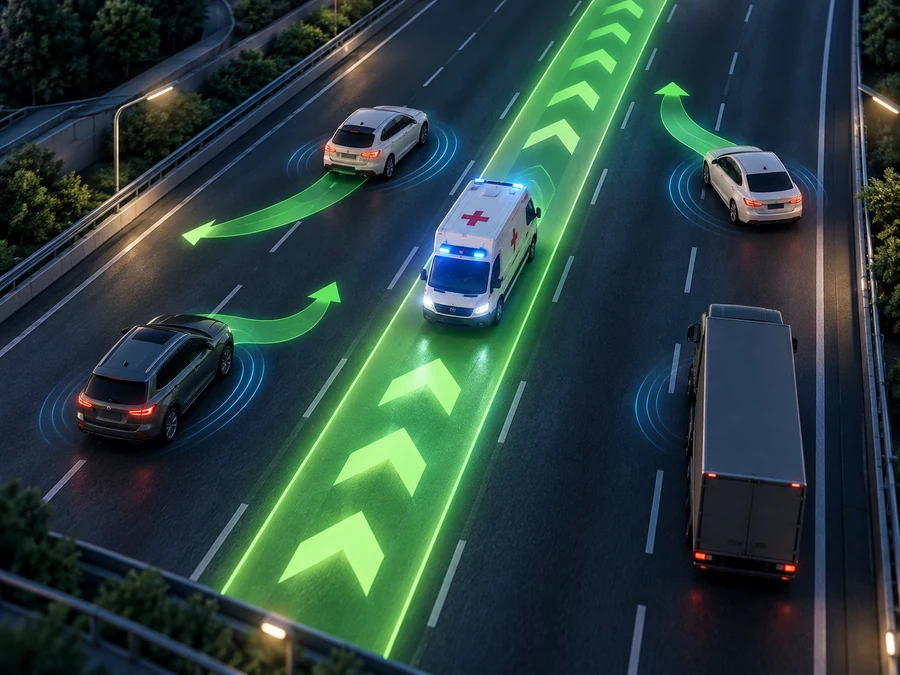
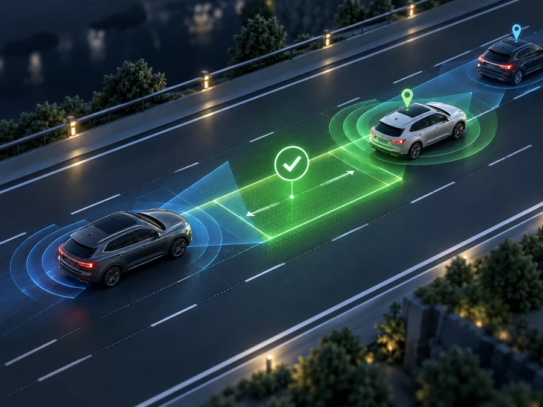
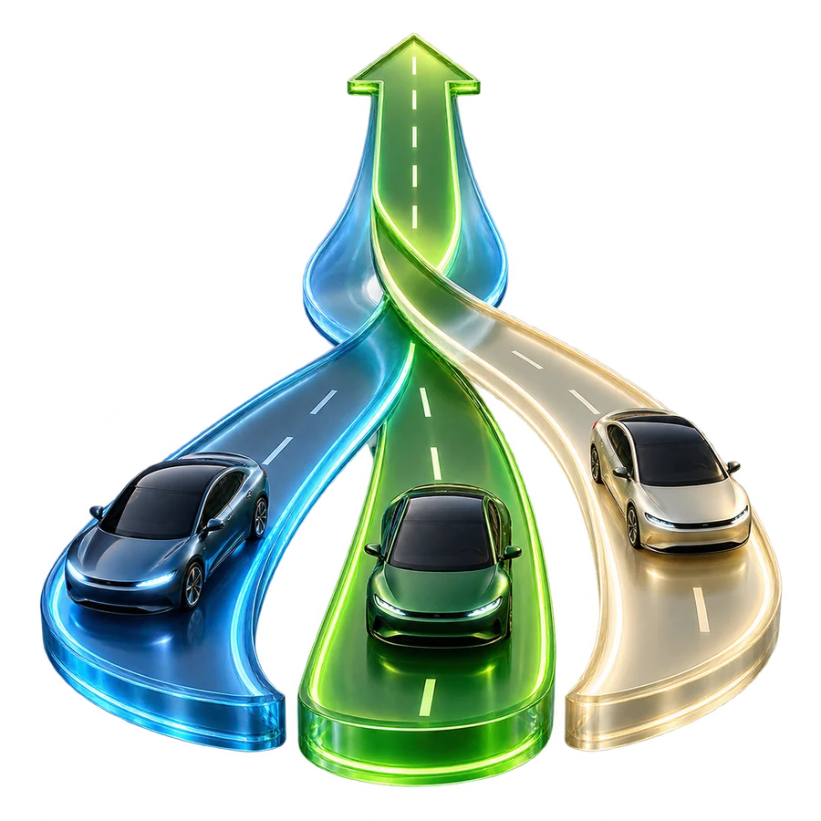
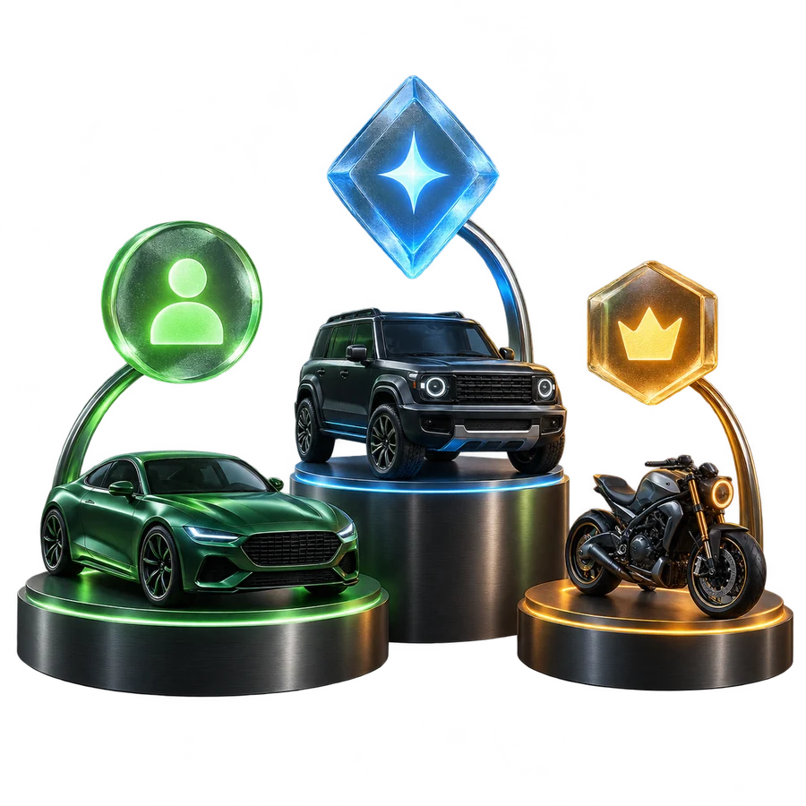
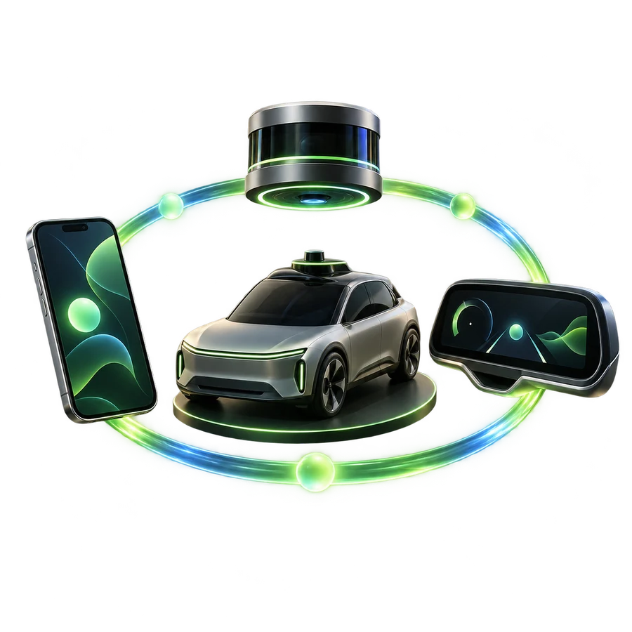

1
Request
A priority participant shares the trip goal, urgency, desired time saving, and value limit.

The Transactional Traffic Mediator is a proposed coordination layer that identifies safe, lane-level micro-maneuvers, offers individualized rewards to participating vehicles, verifies that each action happened, and settles value only after successful completion.
Navigation software can suggest a faster route, but it normally treats the vehicles around us as passive obstacles. It cannot ask nearby participants to safely create and preserve the precise gaps needed for a vehicle to pass.
This concept introduces a voluntary marketplace and control layer for small traffic actions: create a gap, hold position, delay a merge, move into an available space, or yield when safe.

Five connected stages turn a general need to move into a set of specific, voluntary, and verifiable micro-maneuvers.
A priority participant shares the trip goal, urgency, desired time saving, and value limit.
The mediator calculates a safety-conditioned set of nearby maneuvers that can form one temporary corridor.

Each assisting participant receives a role-specific offer and may accept, decline, or counter.
Positioning, telemetry, cameras, radar, lidar, ranging, or V2X evidence confirms the promised action.

Only a verified result releases compensation or records credit for later settlement.
The concept centers on a verified, multi-vehicle marketplace for specific physical actions at lane level.

The mediator can assign different roles to multiple assisting vehicles—such as opening a forward gap, preserving a rear gap, or moving into an available space—so the separate actions create one usable corridor.

One blanket price does not fit every participant. Offers can reflect position, inconvenience, expected delay, maneuver complexity, urgency, supply, and demand for each assigned role.
An accepted offer is only a promise. The system is designed to combine location, ranging, telemetry, camera, radar, lidar, or V2X evidence before treating the physical action as completed.
Verified events can produce credits or tokens that settle later or in a batch. That keeps payment friction out of the few seconds when traffic coordination must remain simple.
The economic layer never replaces the safety layer. A maneuver remains subject to traffic law, current road conditions, participant discretion, and independent approval by vehicle safety systems.

The architecture can bridge phones, vehicle displays, assisted-driving systems, fleets, connected vehicles, and autonomous vehicles instead of depending on a fully self-driving future.
Existing approaches may optimize a route, negotiate one lane change, or coordinate connected vehicles. The patent-pending concept focuses on the complete transaction around a real, multi-vehicle result.
A system may sell faster routing, priority signals, or access to a preferred path.
The value attaches to specific physical acts by nearby vehicles—not merely to choosing a route.
A conventional lane-change method can focus on one requester and one cooperating vehicle.
Multiple participants can receive complementary assignments that work as a coordinated set.
A uniform reward may ignore the different cost or inconvenience borne by each participant.
Role-specific offers, bids, and counteroffers can value each participant separately.
A digital agreement does not prove that the promised real-world movement happened.
Value is released only after the system verifies the agreed physical result.
Some coordination models assume every participating vehicle is highly automated.
Human, assisted, connected, fleet, and autonomous participants can share the same coordination layer.
The disclosed system can combine multiple communications, sensing, and interface technologies without depending on a single implementation.
The Transactional Traffic Mediator is patent pending in the United States.
The application describes systems and methods for generating, pricing, assigning, verifying, and compensating coordinated lane-level micro-maneuvers, including embodiments for human-driven, assisted, connected, and autonomous vehicles.
Inventor: Benny Goldstein
Benny Labs Foundation is working to develop, model, and validate the Transactional Traffic Mediator further. We welcome people and organizations that can help test the coordination logic, improve the safety model, build prototypes, study human behavior, or identify a practical pilot environment.
Participate in the project →Benny Labs Foundation welcomes conversations with researchers, mobility platforms, automotive suppliers, fleets, infrastructure partners, prospective licensees, and anyone prepared to help turn the concept into a responsible pilot.
Start a conversation →